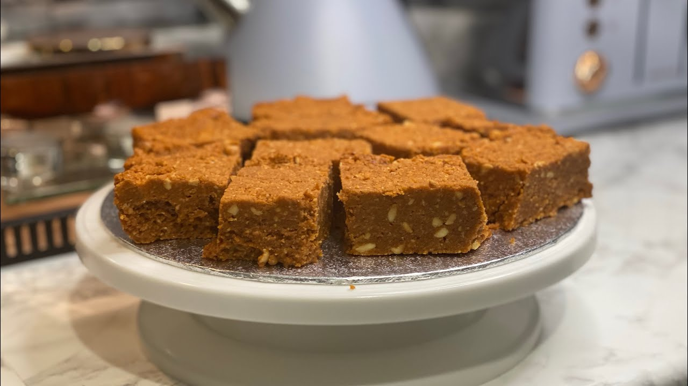

Halwa
Halwa is a rich, sweet treat made primarily from peanuts and sugar. Its dense and slightly sticky texture, combined with a nutty flavor, makes it a favorite among locals and visitors alike. Often enjoyed during special occasions and festivals, Halwa showcases the traditional Ethiopian mastery of simple ingredients turned into delightful desserts.

Mushabak
Mushabak is a delicious dessert made from honey and flour. It is known for its sweet aroma and slightly chewy texture, a perfect balance of sticky and soft. Mushabak is a traditional treat often shared with family and friends during gatherings, reflecting the communal spirit of Dire Dawa.
Baklava
Baklava in Dire Dawa is crafted from layers of thin dough infused with honey, giving it a smooth and melt-in-your-mouth texture. Though it shares origins with Middle Eastern sweets, Dire Dawa’s baklava has a unique local twist that emphasizes sweetness and delicate layering, making it a must-try dessert for any visitor.
← Back to Items & Prices